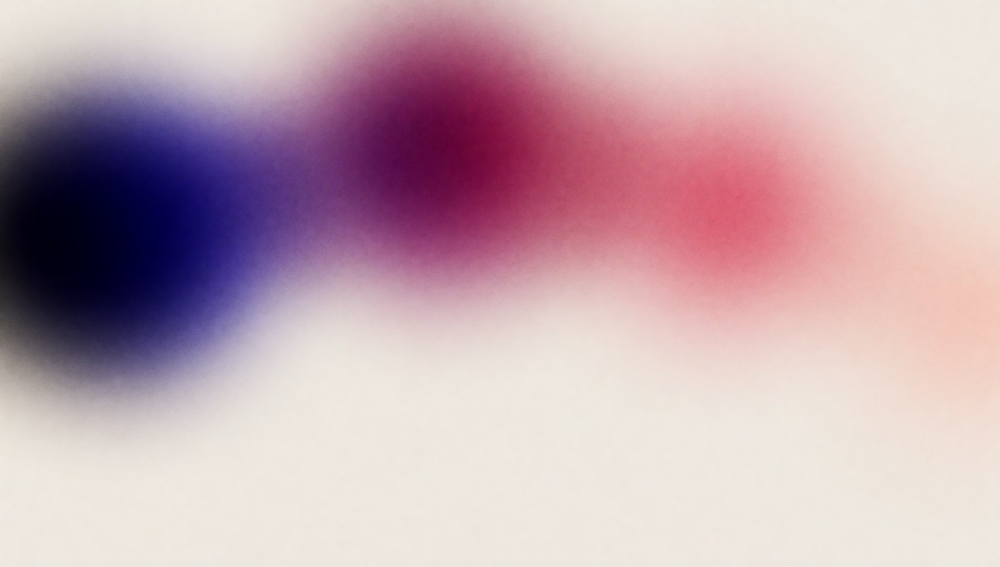
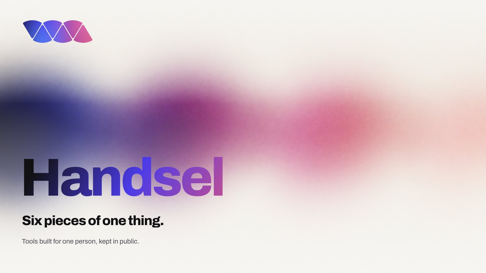
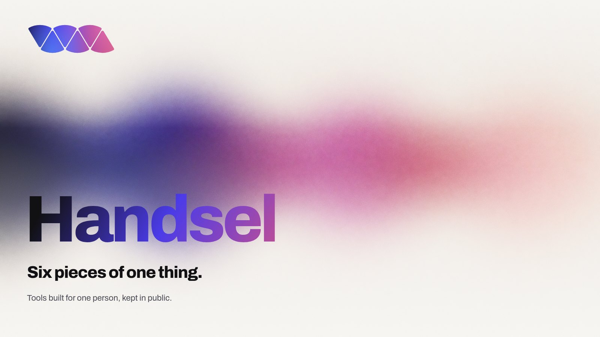
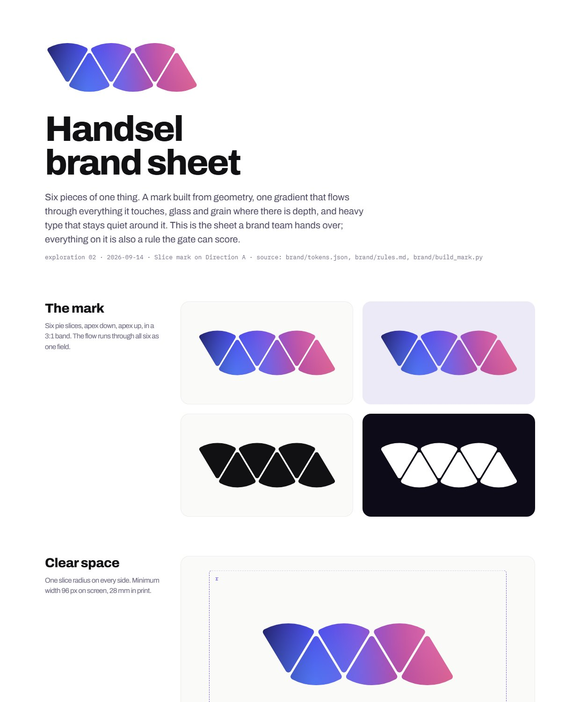
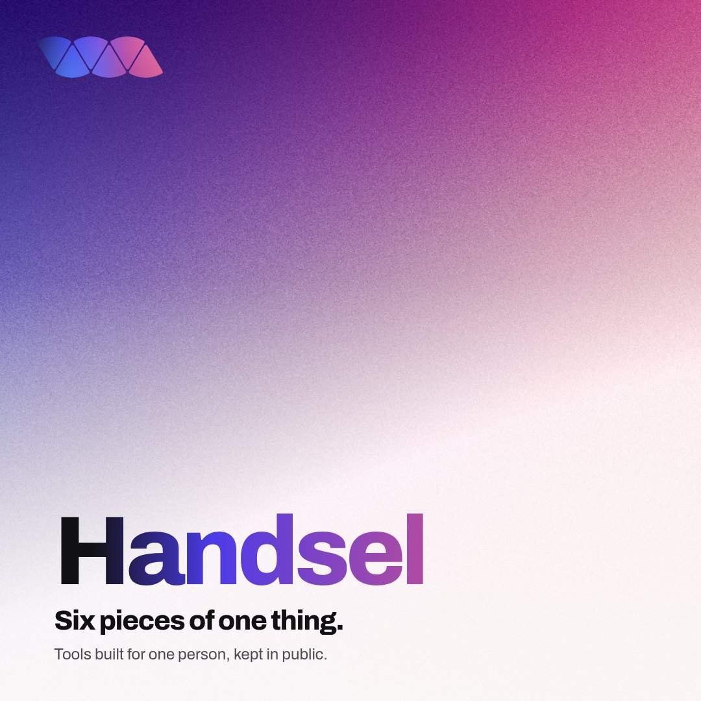
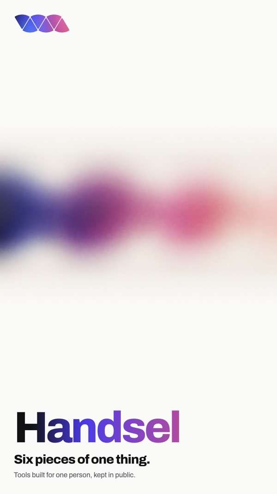
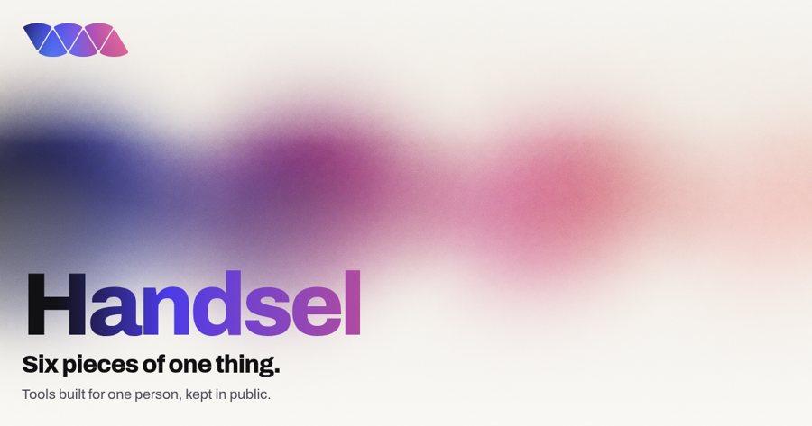
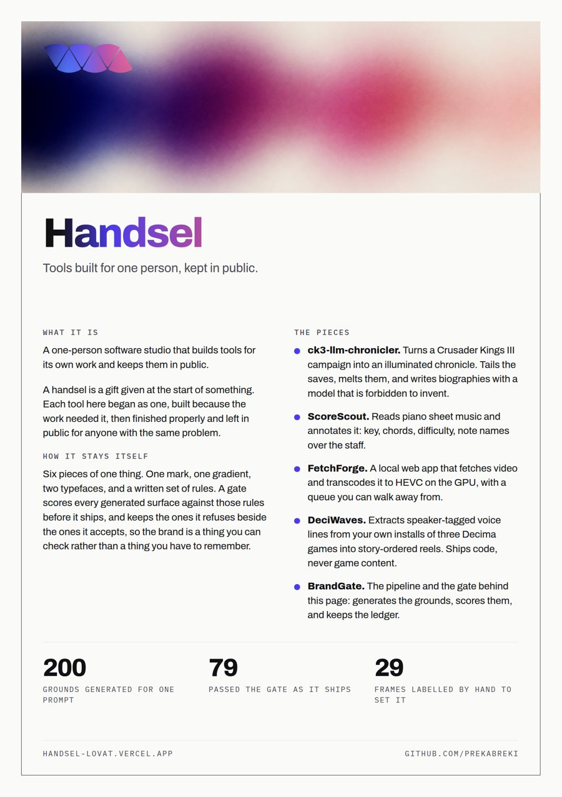

Handsel
Six pieces of one thing.
Tools built for one person, kept in public.

Tools built for one person, kept in public.
The ground behind the wordmark is drawn by code, fitted by measurement to the one frame out of four prompt versions the designer liked, after asking whether an image model was the right tool for a gradient at all. The candidate beside it is the model's own frame from the version before. A gate written from the brand's own rules scored both before either could land here. Same type, same mark, same veil. One of them is Handsel.


A brand that lives in a PDF drifts the day the second person touches it. Here the rules are written as plain sentences, and a program scores every generated surface against those same sentences before it can ship. Change a sentence and the scores change. Nothing is copied into code.
One markdown file a designer would write anyway. Each sentence is parsed into a check that reads its numbers out of the sentence itself. A rule no program can measure stays listed as manual, so the gap is visible instead of quietly gone.
Grounds come from a versioned prompt and a seed on a local image model, or from a procedure fitted to the frame the designer liked. Every run lands as one row in an append-only ledger, refusals and failures included.
On-brand: palette by mass, the mark found by its edges and checked level, text contrast against the ground around it, one gesture per surface, the softness of the wash. Novelty: distance from everything already accepted, so a pass is never a repeat.
The designer labels frames beside the gate's verdict. Every disagreement is written up in their words, and the ones that recur become checks. The wash check exists because seven frames passed that a person refused for "too dark, not enough bleed".
As a ground it is softened: blurred orbs over paper or night, indigo at the left and magenta warming to rose at the right, bleeding into one another, with a paper veil and film grain over that. No other colour enters the wash. Never the raw ramp.the refused hero above, scored
| colour.01 | 0.63 | the ground is #ECEAF6 |
| colour.03 | 1.00 | no forbidden colour holds a flat area (#B44C9E under 4%) |
| gradient.03 | 0.89 | the wash is dull (mean chroma 27, a ground carries at least 30) |
| failon-brand 0.84 | 3 rules not applicable, no text in the frame. 28 rules manual. |
Mark, clear space, colour, the flow, type, do and do not, geometry. It is rendered from the same tokens, rules and mark geometry the gate reads, so the sheet, this page and the score above never disagree about a number. Every rule on it is one the gate can check.

Each one began as a problem in the studio's own work and was finished properly before it was left in public. The repos are the proof. More arrive here as they ship.
Square, story and card from one ground and one headline, and an A4 sheet with the ground kept to a band. Each one was scored by the gate before it landed here. The story's ground is the same ground drawn again at its own aspect, which a procedural ground can do and a cropped one cannot.



